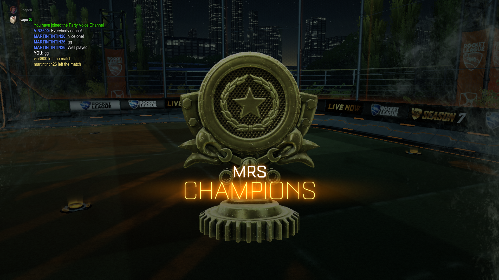

Como tudo começou
Minha conexão com Rocket League começou pela minha paixão por futebol e carros. Sempre gostei de jogos relacionados a esses temas, como FIFA e Forza Horizon, mas encontrar um jogo que misturasse os dois foi algo completamente diferente.
Quando conheci Rocket League, eu ainda não podia comprar o jogo. Lembro de pedir para minha mãe me levar até a livraria Saraiva para jogar nos videogames disponíveis lá. Mesmo jogando por pouco tempo, aquilo já era suficiente para me deixar apaixonado.
Depois que finalmente consegui jogar em casa, passei meses entrando todos os dias no jogo. Eu chegava da escola e ia direto jogar. Durante esse período, acabei criando amizades muito importantes por causa do Rocket League.


As amizades criadas pelo jogo
Hoje, boa parte dessas amizades ainda fazem parte da minha vida. Muitas pessoas que conheci através do Rocket League continuam no meu ciclo social até hoje.
O jogo acabou se tornando uma forma de reunir amigos, conversar, competir e criar memórias. Mesmo fora das partidas, ele continuou presente em vários momentos importantes da minha rotina.
Por isso, este projeto também representa uma parte pessoal da minha trajetória, não apenas um trabalho técnico.
Momentos e amizades
Espaço reservado para adicionar fotos pessoais, amigos e momentos relacionados ao que o jogo me proporcionou.


O motivo da criação do site
Durante minha experiência jogando Rocket League, percebi que muitos jogadores iniciantes tinham dificuldade para entender conceitos básicos como rotação, posicionamento e movimentação.
A partir disso, surgiu a ideia de criar um site que organizasse essas informações de forma mais simples e acessível, ajudando novos jogadores a aprenderem o jogo de maneira mais estruturada.
Além da parte informativa, o projeto também conta com um sistema de quiz e dashboard para coletar dados, analisar desempenho e aplicar conhecimentos técnicos de desenvolvimento web e banco de dados.